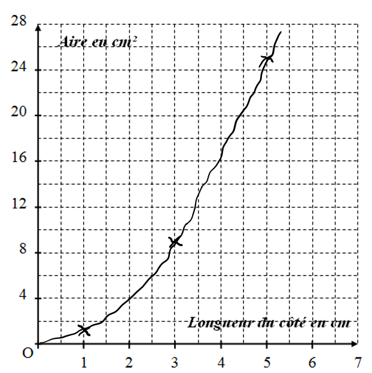

← Retour au choix des chapitres
Chapitre 3 : Proportionnalité
Situation de proportionnalité
Reconnaitre une situation de proportionnalité
Définition : Deux grandeurs sont proportionnelles lorsque l'une s'obtient en multipliant (ou en divisant) l'autre par un même nombre non nul appelé coefficient de proportionnalité.
Exemple 1 :
| Côté d'un carré (cm) |
2 |
4 |
6 |
| Périmètre du carré (cm) |
8 |
16 |
24 |
On a :
82 = 4 ; 164 = 4 ; 246 = 4
Les quotients sont égaux. Ce nombre est le coefficient de proportionnalité.
Dans ce cas les deux grandeurs sont proportionnelles.
Exemple 2 (contre-exemple) :
| Côté d'un carré (cm) |
1 |
3 |
5 |
| Aire du carré (cm²) |
1 |
9 |
25 |
On a :
11 = 1 ; 93 = 3
Les quotients ne sont pas égaux.
Dans ce cas les deux grandeurs ne sont pas proportionnelles.
Représentation graphique de l'exemple 1:

Représentation graphique de l'exemple 2:

Sur un graphique, une situation de proportionnalité est représentée par une droite passant par l'origine.
Compléter un tableau de proportionnalité
Exemple : Paul achète 3 kg de pommes pour 6,9 €. Compléter le tableau suivant :
| Quantité de pommes (Kg) |
3 |
4 |
7 |
15 |
| Prix (en €) |
6,9 |
? |
? |
? |
a) En utilisant le coefficient de proportionnalité
| Quantité de pommes (Kg) |
3 |
4 |
| Prix (en €) |
6,9 |
9,2 |
6,93 = 2,3
Le coefficient de proportionnalité est 2,3.
Donc : 4 × 2,3 = 9,2
b) En additionnant ou en soustrayant deux colonnes du tableau
Dans un tableau de proportionnalité on peut additionner ou soustraire deux colonnes :
| Quantité de pommes (Kg) |
3 |
4 |
7 |
| Prix (en €) |
6,9 |
9,2 |
16,1 |
3 kg + 4 kg = 7 kg, et 6,9 € + 9,2 € = 16,1 €
c) En multipliant ou en divisant une colonne par un nombre non nul
| Quantité de pommes (Kg) |
3 |
15 |
| Prix (en €) |
6,9 |
34,5 |
153 = 5
Ainsi on passe de la première colonne à la deuxième colonne en multipliant par 5.
Donc : 6,9 × 5 = 34,5
Exemples d'utilisations de la proportionnalité
Les pourcentages
Propriété : Appliquer x % à un nombre, c'est multiplier ce nombre par x100.
a) Appliquer un pourcentage :
Exemple : Dans un collège de 400 élèves, 15% des élèves jouent au volley. Combien d'élèves jouent au volley ?
400 × 15100 = 400 × 0,15 = 60
Il y a 60 élèves qui jouent au volley dans ce collège.
Ou bien :
| Nombre d'élèves |
100 |
400 |
| Nombre d'élèves qui jouent au volley |
15 |
60 |
b) Calculer un pourcentage :
Exemple : Dans une classe de 30 élèves il y a 9 filles. Quel est le pourcentage de filles dans cette classe ?
Cela revient à déterminer le nombre de filles qu'il y aurait si la classe était composée de 100 élèves.
| Nombre d'élèves |
30 |
100 |
| Nombre de filles |
9 |
30 |
930 = 0,3
Le coefficient de proportionnalité est 0,3.
Dans cette classe, il y a 30% de filles.
Échelles
Définition : Sur une représentation à l'échelle, les mesures sur la représentation sont proportionnelles aux mesures réelles. L'échelle est le coefficient de proportionnalité.
Remarque importante : Les mesures sont exprimées dans la même unité.
a) Utilisation d'une échelle :
Exemple :Sur une carte à l'échelle
150 000, deux villes sont distantes de 12 cm.
Quelle est la distance réelle entre ces deux villes ?
| Distance sur la carte en cm |
1 |
12 |
| Distance réelle en cm |
50 000 |
600 000 |
50 0001 = 50 000
Le coefficient de proportionnalité est 50 000.
La distance réelle est de 600 000 cm soit 6 km.
b) Calculer une échelle :
Exemple :Calculer l'échelle de ce dessin :

Sur ce dessin, on mesure la longueur de la flèche, elle mesure 4 cm.
On cherche combien 1 cm sur le dessin va représenter en réalité.
| Distance sur le dessin en cm |
4 |
1 |
| Distance réelle en cm |
36 |
9 |
364 = 9
Le coefficient de proportionnalité est 9.
L'échelle est 19.
Remarque : Calculer une échelle revient à calculer le coefficient de proportionnalité : distance sur la cartedistance réelle, ces distances étant dans la même unité.
Ratio
Un ratio est une façon d'indiquer une proportion entre plusieurs quantités. Par exemple, le ratio 3 : 2 : 5 signifie que pour 3 parts du premier élément, on prend 2 parts du second et 5 parts du troisième.
Propriété :
- On dit que deux nombres a et b sont dans le ratio 2 : 3 si a2 = b3
- On dit que trois nombres a, b et c sont dans le ratio 2 : 3 : 7 si a2 = b3 = c7
Remarque : Dans la pratique, pour deux nombres, on dit que deux nombres a et b sont dans le ratio 2 : 3 si ab = 23.
On retrouve ainsi la notion de proportionnalité entre les nombres a et b.
Exemple : Partager 100 € entre trois personnes selon le ratio 3 : 2 : 5.
3 + 2 + 5 = 10, au total, il y a 10 parts
10010 = 10, chaque part représente 10 €
3 × 10 = 30, le premier reçoit 30 €
2 × 10 = 20, le second reçoit 20 €
5 × 10 = 50, le troisième reçoit 50 €
Exercice 1 : Partager 60 bonbons entre trois enfants dans le ratio 2 : 3 : 5.
Exercice 2 : Une recette de gâteau utilise un ratio de 2 : 1 entre la farine et le sucre. Si on utilise 300 g de farine, combien de sucre faut-il ?